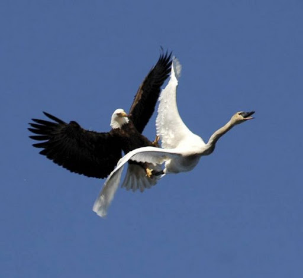

Мой первый блог
В синем холодном небе летят лебеди. В полете эти птицы неутомимы, хотя нести тяжелое тело на крыльях им нелегко: вес лебедя — более десяти килограммов. Особенно трудно этим тяжеловесам взлетать. Махая крыльями, они сначала как бы бегут по воде, оставляя за собою круги от ударов мощных перепончатых лап. Взлетная полоса тянется метров на пятнадцать — двадцать. Но, оторвавшись от воды, птица расправляет крылья, быстро набирая высоту, летит легко и может лететь очень долго. В отличие от орлов и аистов тяжелое тело лебедя не допускает парения, поэтому крыльями надо махать непрерывно. И все решает сила грудных мощных мускулов. Наблюдая этих птиц, прирученных на прудах или живущих в дикой природе, всегда любуешься их красотой. Белоснежный наряд, живописный изгиб шеи, гордая, независимая осанка делают лебедя очень заметным и привлекательным. Воспет он в сказках, стихах, музыке, живописных картинах, и даже на деревенских ковриках над кроватями видишь этих замечательных птиц.
В синем холодном небе летят лебеди. В полете эти птицы неутомимы, хотя нести тяжелое тело на крыльях им нелегко: вес лебедя — более десяти килограммов. Особенно трудно этим тяжеловесам взлетать. Махая крыльями, они сначала как бы бегут по воде, оставляя за собою круги от ударов мощных перепончатых лап. Взлетная полоса тянется метров на пятнадцать — двадцать. Но, оторвавшись от воды, птица расправляет крылья, быстро набирая высоту, летит легко и может лететь очень долго. В отличие от орлов и аистов тяжелое тело лебедя не допускает парения, поэтому крыльями надо махать непрерывно. И все решает сила грудных мощных мускулов. Наблюдая этих птиц, прирученных на прудах или живущих в дикой природе, всегда любуешься их красотой. Белоснежный наряд, живописный изгиб шеи, гордая, независимая осанка делают лебедя очень заметным и привлекательным. Воспет он в сказ¬ках, стихах, музыке, живописных картинах, и даже на деревенских ковриках над кроватями видишь этих замечательных птиц.